Web Server Statistics for drarmankabir.com
Web Server Statistics for drarmankabir.com
Program started on Tue, Jul 14 2026 at 11:39 AM.
Analyzed requests from Tue, Jul 07 2026 at 10:45 AM to Tue, Jul 14 2026 at 11:12 AM (7.02 days).
Web Server Statistics for drarmankabir.comProgram started on Tue, Jul 14 2026 at 11:39 AM.
Analyzed requests from Tue, Jul 07 2026 at 10:45 AM to Tue, Jul 14 2026 at 11:12 AM (7.02 days).
(Go To: Top | General Summary | Monthly Report | Daily Summary | Hourly Summary | Domain Report | Organization Report | Failed Referrer Report | Referring Site Report | Browser Report | Browser Summary | Operating System Report | Status Code Report | File Size Report | File Type Report | Directory Report | Request Report)
Figures in parentheses refer to the 7-day period ending Jul 14 2026 at 11:39 AM.
Successful requests: 2,441 (2,438)
Average successful requests per day: 347 (348)
Successful requests for pages: 340 (340)
Average successful requests for pages per day: 48 (48)
Failed requests: 1,250 (14)
Redirected requests: 4 (0)
Distinct files requested: 597 (835)
Distinct hosts served: 239 (461)
Data transferred: 42.19 megabytes (42.19 megabytes)
Average data transferred per day: 6.01 megabytes (6.03 megabytes)
(Go To: Top | General Summary | Monthly Report | Daily Summary | Hourly Summary | Domain Report | Organization Report | Failed Referrer Report | Referring Site Report | Browser Report | Browser Summary | Operating System Report | Status Code Report | File Size Report | File Type Report | Directory Report | Request Report)
Each unit ( ) represents 10 requests for pages or part thereof.
) represents 10 requests for pages or part thereof.
| month | #reqs | #pages | |
|---|---|---|---|
| Jul 2026 | 2441 | 340 |   |
Busiest month: Jul 2026 (340 requests for pages).
(Go To: Top | General Summary | Monthly Report | Daily Summary | Hourly Summary | Domain Report | Organization Report | Failed Referrer Report | Referring Site Report | Browser Report | Browser Summary | Operating System Report | Status Code Report | File Size Report | File Type Report | Directory Report | Request Report)
Each unit () represents 4 requests for pages or part thereof.
| day | #reqs | #pages | |
|---|---|---|---|
| Sun | 362 | 81 |   |
| Mon | 1363 | 151 | |
| Tue | 131 | 35 |  |
| Wed | 0 | 0 | |
| Thu | 0 | 0 | |
| Fri | 0 | 0 | |
| Sat | 585 | 73 | |
(Go To: Top | General Summary | Monthly Report | Daily Summary | Hourly Summary | Domain Report | Organization Report | Failed Referrer Report | Referring Site Report | Browser Report | Browser Summary | Operating System Report | Status Code Report | File Size Report | File Type Report | Directory Report | Request Report)
Each unit () represents 2 requests for pages or part thereof.
| hour | #reqs | #pages | |
|---|---|---|---|
| 0 | 65 | 17 | |
| 1 | 290 | 20 | |
| 2 | 366 | 49 | |
| 3 | 24 | 11 | |
| 4 | 10 | 6 | |
| 5 | 60 | 11 | |
| 6 | 77 | 10 | |
| 7 | 34 | 8 | |
| 8 | 33 | 11 | |
| 9 | 32 | 7 | |
| 10 | 160 | 40 | |
| 11 | 21 | 12 | |
| 12 | 9 | 5 | |
| 13 | 181 | 16 | |
| 14 | 56 | 5 | |
| 15 | 98 | 11 | |
| 16 | 90 | 10 | |
| 17 | 19 | 8 | |
| 18 | 67 | 10 | |
| 19 | 101 | 12 | |
| 20 | 89 | 18 | |
| 21 | 28 | 13 | |
| 22 | 159 | 10 | |
| 23 | 372 | 20 | |
(Go To: Top | General Summary | Monthly Report | Daily Summary | Hourly Summary | Domain Report | Organization Report | Failed Referrer Report | Referring Site Report | Browser Report | Browser Summary | Operating System Report | Status Code Report | File Size Report | File Type Report | Directory Report | Request Report)
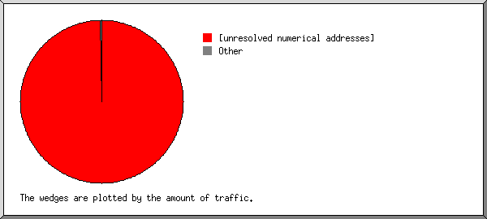
Listing domains, sorted by the amount of traffic.
| #reqs | %bytes | domain |
|---|---|---|
| 2366 | 99.88% | [unresolved numerical addresses] |
| 75 | 0.12% | [domain not given] |
(Go To: Top | General Summary | Monthly Report | Daily Summary | Hourly Summary | Domain Report | Organization Report | Failed Referrer Report | Referring Site Report | Browser Report | Browser Summary | Operating System Report | Status Code Report | File Size Report | File Type Report | Directory Report | Request Report)
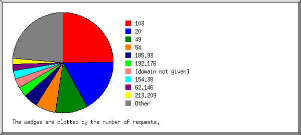
Listing the top 20 organizations by the number of requests, sorted by the number of requests.
| #reqs | %bytes | organization |
|---|---|---|
| 607 | 25.81% | 103 |
| 418 | 2.11% | 20 |
| 253 | 12.06% | 49 |
| 155 | 0.16% | 54 |
| 113 | 2.08% | 185.93 |
| 79 | 3.65% | 192.178 |
| 75 | 0.12% | [domain not given] |
| 67 | 3.07% | 154.38 |
| 49 | 4.94% | 62.146 |
| 47 | 0.11% | 213.209 |
| 41 | 1.74% | 149.56 |
| 40 | 1.33% | 31 |
| 33 | 1.22% | 202.8 |
| 27 | 1.22% | 161.115 |
| 26 | 0.09% | 178.156 |
| 25 | 2.27% | 74 |
| 24 | 0.04% | 43 |
| 22 | 0.05% | 35 |
| 20 | 0.02% | 52 |
| 20 | 2.23% | 66.249 |
| 300 | 35.68% | [not listed: 106 organizations] |
(Go To: Top | General Summary | Monthly Report | Daily Summary | Hourly Summary | Domain Report | Organization Report | Failed Referrer Report | Referring Site Report | Browser Report | Browser Summary | Operating System Report | Status Code Report | File Size Report | File Type Report | Directory Report | Request Report)
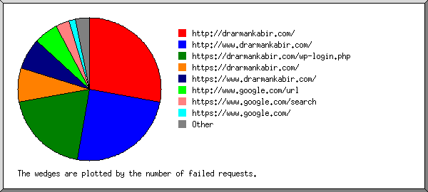
Listing referring URLs, sorted by the number of failed requests.
(Go To: Top | General Summary | Monthly Report | Daily Summary | Hourly Summary | Domain Report | Organization Report | Failed Referrer Report | Referring Site Report | Browser Report | Browser Summary | Operating System Report | Status Code Report | File Size Report | File Type Report | Directory Report | Request Report)
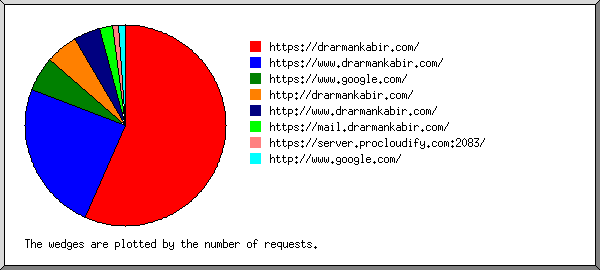
Listing referring sites, sorted by the number of requests.
| #reqs | site |
|---|---|
| 339 | https://drarmankabir.com/ |
| 146 | https://www.drarmankabir.com/ |
| 33 | https://www.google.com/ |
| 31 | http://drarmankabir.com/ |
| 26 | http://www.drarmankabir.com/ |
| 13 | https://mail.drarmankabir.com/ |
| 6 | https://server.procloudify.com:2083/ |
| 6 | http://www.google.com/ |
(Go To: Top | General Summary | Monthly Report | Daily Summary | Hourly Summary | Domain Report | Organization Report | Failed Referrer Report | Referring Site Report | Browser Report | Browser Summary | Operating System Report | Status Code Report | File Size Report | File Type Report | Directory Report | Request Report)
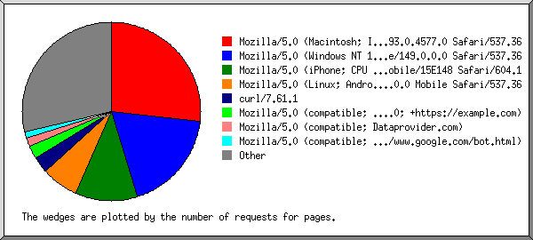
Listing the top 40 browsers by the number of requests for pages, sorted by the number of requests for pages.
| #reqs | #pages | browser |
|---|---|---|
| 190 | 89 | Mozilla/5.0 (Macintosh; Intel Mac OS X 10_15_7) AppleWebKit/537.36 (KHTML, like Gecko) Chrome/93.0.4577.0 Safari/537.36 |
| 392 | 61 | Mozilla/5.0 (Windows NT 10.0; Win64; x64) AppleWebKit/537.36 (KHTML, like Gecko) Chrome/149.0.0.0 Safari/537.36 |
| 37 | 37 | Mozilla/5.0 (iPhone; CPU iPhone OS 13_2_3 like Mac OS X) AppleWebKit/605.1.15 (KHTML, like Gecko) Version/13.0.3 Mobile/15E148 Safari/604.1 |
| 68 | 22 | Mozilla/5.0 (Linux; Android 10; K) AppleWebKit/537.36 (KHTML, like Gecko) Chrome/150.0.0.0 Mobile Safari/537.36 |
| 48 | 10 | curl/7.61.1 |
| 8 | 8 | Mozilla/5.0 (compatible; CMS-Checker/1.0; +https://example.com) |
| 40 | 5 | Mozilla/5.0 (compatible; Dataprovider.com) |
| 15 | 4 | Mozilla/5.0 (compatible; Googlebot/2.1; +http://www.google.com/bot.html) |
| 6 | 3 | Mozilla/5.0 (compatible; MSIE 9.0; Windows NT 6.1; WOW64; Trident/6.0) |
| 30 | 3 | Mozilla/5.0 (X11; Linux x86_64) AppleWebKit/537.36 (KHTML, like Gecko) HeadlessChrome/146.0.7680.153 Safari/537.36 |
| 5 | 3 | SiteLockSpider [en] (WinNT; I ;Nav) |
| 6 | 3 | Mozilla/5.0 (compatible; CensysInspect/1.1; +https://about.censys.io/) |
| 6 | 3 | Mozilla/5.0 (X11; Linux x86_64) AppleWebKit/537.36 (KHTML, like Gecko) HeadlessChrome/75.0.3765.0 Safari/537.36 |
| 78 | 3 | Mozilla/5.0 (Macintosh; Intel Mac OS X 10_15_7) AppleWebKit/537.36 (KHTML, like Gecko) Chrome/131.0.0.0 Safari/537.36 |
| 10 | 3 | Mozilla/5.0 (X11; Linux x86_64) AppleWebKit/537.36 (KHTML, like Gecko) HeadlessChrome/139.0.7258.5 Safari/537.36 |
| 3 | 3 | Mozilla/5.0 (X11; Linux x86_64) AppleWebKit/537.36 (KHTML, like Gecko) Chrome/108.0.5359.124 Safari/537.36 |
| 4 | 2 | Mozilla/5.0 AppleWebKit/537.36 (KHTML, like Gecko; compatible; bingbot/2.0; +http://www.bing.com/bingbot.htm) Chrome/136.0.0.0 Safari/537.36 |
| 77 | 2 | Mozilla/5.0 (Windows NT 10.0; Win64; x64) AppleWebKit/537.36 (KHTML, like Gecko) Chrome/131.0.0.0 Safari/537.36 |
| 2 | 2 | Java/21.0.11 |
| 2 | 2 | Mozilla/5.0 (X11; Linux i686; rv:109.0) Gecko/20100101 Firefox/120.0 |
| 3 | 2 | Mozilla/5.0 (Windows NT 10.0; Win64; x64) AppleWebKit/537.36 (KHTML, like Gecko) Chrome/137.0.0.0 Safari/537.36 +https://forestengine.net/#opt-out |
| 8 | 2 | Mozilla/5.0 (iPhone; CPU iPhone OS 26_3 like Mac OS X) AppleWebKit/605.1.15 (KHTML, like Gecko) CriOS/144.0.7559.95 Mobile/15E148 Safari/604.1 |
| 2 | 2 | Mozilla/5.0 (X11; Linux x86_64; rv:105.0) Gecko/20100101 Firefox/105.0 |
| 53 | 2 | Mozilla/5.0 (Linux; Android 6.0.1; Nexus 5X Build/MMB29P) AppleWebKit/537.36 (KHTML, like Gecko) Chrome/150.0.7871.46 Mobile Safari/537.36 (compatible; Googlebot/2.1; +http://www.google.com/bot.html) |
| 2 | 2 | visionheight.com/scan Mozilla/5.0 (Macintosh; Intel Mac OS X 10_15_7) Chrome/126.0.0.0 Safari/537.36 |
| 127 | 2 | Mozilla/5.0 (Windows NT 10.0; Win64; x64) AppleWebKit/537.36 (KHTML, like Gecko) Chrome/150.0.0.0 Safari/537.36 Edg/150.0.0.0 |
| 2 | 2 | Mozilla/5.0 (Windows NT 10.0; Win64; x64; rv:120.0) Gecko/20100101 Firefox/120.0 |
| 4 | 2 | Mozilla/5.0 (Macintosh; Intel Mac OS X 15_7_5) AppleWebKit/605.1.15 (KHTML, like Gecko) Version/26.0 Safari/605.1.15 |
| 6 | 2 | Mozilla/5.0 AppleWebKit/537.36 (KHTML, like Gecko; compatible; GPTBot/1.4; +https://openai.com/gptbot) |
| 3 | 2 | Mozilla/5.0 (Windows NT 10.0; Win64; x64) AppleWebKit/537.36 (KHTML, like Gecko) Chrome/145.0.0.0 Safari/537.36 |
| 19 | 2 | Mozilla/5.0 (Windows NT 10.0; Win64; x64) AppleWebKit/537.36 (KHTML, like Gecko) Chrome/89.0.4389.114 Safari/537.36 |
| 2 | 2 | Mozilla/5.0 (Windows NT 10.0; Win64; x64) AppleWebKit/537.36 |
| 5 | 2 | Mozilla/5.0 (Windows NT 10.0; Win64; x64) AppleWebKit/537.36 (KHTML, like Gecko) Chrome/120.0.0.0 Safari/537.36 |
| 3 | 2 | Mozilla/5.0 AppleWebKit/537.36 (KHTML, like Gecko; compatible; bingbot/2.0; +http://www.bing.com/bingbot.htm) Chrome/116.0.1938.76 Safari/537.36 |
| 6 | 1 | Mozilla/5.0 (compatible; AhrefsBot/7.0; +http://ahrefs.com/robot/) |
| 1 | 1 | Mozilla/5.0 (Macintosh; Intel Mac OS X 10_15_7) AppleWebKit/537.36 (KHTML, like Gecko) Chrome/143.0.0.0 Safari/537.36 |
| 1 | 1 | Mozilla/5.0 (X11; Linux x86_64) AppleWebKit/537.36 (KHTML, like Gecko) Chrome/106.0.5249.119 Safari/537.36 |
| 8 | 1 | Mozilla/5.0 (Windows NT 10.0; Win64; x64) AppleWebKit/537.36 (KHTML, like Gecko) Chrome/99.0.4844.51 Safari/537.36 Edg/99.0.1150.30 |
| 1 | 1 | Mozilla/5.0 (Linux; Android 10; SM-G981B) AppleWebKit/537.36 (KHTML, like Gecko) Chrome/80.0.3987.162 Mobile Safari/537.36 |
| 4 | 1 | python-requests/2.34.2 |
| 501 | 29 | [not listed: 84 browsers] |
(Go To: Top | General Summary | Monthly Report | Daily Summary | Hourly Summary | Domain Report | Organization Report | Failed Referrer Report | Referring Site Report | Browser Report | Browser Summary | Operating System Report | Status Code Report | File Size Report | File Type Report | Directory Report | Request Report)
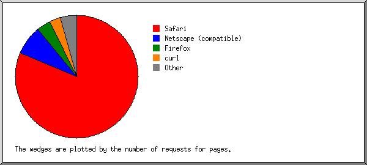
Listing browsers with at least 1 request for a page, sorted by the number of requests for pages.
| # | #reqs | #pages | browser |
|---|---|---|---|
| 1 | 1421 | 269 | Safari |
| 1318 | 227 | Safari/537 | |
| 61 | 40 | Safari/604 | |
| 37 | 2 | Safari/605 | |
| 2 | 206 | 26 | Netscape (compatible) |
| 3 | 28 | 12 | Firefox |
| 4 | 4 | Firefox/120 | |
| 2 | 2 | Firefox/105 | |
| 2 | 1 | Firefox/122 | |
| 3 | 1 | Firefox/131 | |
| 1 | 1 | Firefox/115 | |
| 1 | 1 | Firefox/125 | |
| 9 | 1 | Firefox/137 | |
| 1 | 1 | Firefox/148 | |
| 4 | 48 | 10 | curl |
| 48 | 10 | curl/7 | |
| 5 | 6 | 3 | MSIE |
| 6 | 3 | MSIE/9 | |
| 6 | 5 | 3 | SiteLockSpider [en] (WinNT; I ;Nav) |
| 7 | 12 | 3 | Mozilla |
| 8 | 2 | 2 | Java |
| 2 | 2 | Java/21 | |
| 9 | 7 | 2 | python-requests |
| 7 | 2 | python-requests/2 | |
| 10 | 1 | 1 | Hello from Palo Alto Networks, find out more about our scans in https: |
| 1 | 1 | Hello from Palo Alto Networks, find out more about our scans in https://docs-cortex | |
| 52 | 0 | [not listed: 3 browsers] |
(Go To: Top | General Summary | Monthly Report | Daily Summary | Hourly Summary | Domain Report | Organization Report | Failed Referrer Report | Referring Site Report | Browser Report | Browser Summary | Operating System Report | Status Code Report | File Size Report | File Type Report | Directory Report | Request Report)
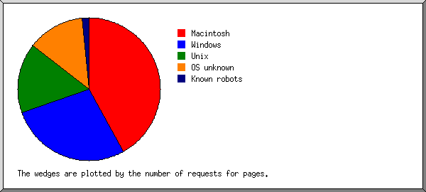
Listing operating systems, sorted by the number of requests for pages.
| # | #reqs | #pages | OS |
|---|---|---|---|
| 1 | 409 | 139 | Macintosh |
| 2 | 744 | 91 | Windows |
| 736 | 87 | Windows NT | |
| 8 | 4 | Unknown Windows | |
| 3 | 230 | 53 | Unix |
| 230 | 53 | Linux | |
| 4 | 266 | 43 | OS unknown |
| 5 | 139 | 5 | Known robots |
(Go To: Top | General Summary | Monthly Report | Daily Summary | Hourly Summary | Domain Report | Organization Report | Failed Referrer Report | Referring Site Report | Browser Report | Browser Summary | Operating System Report | Status Code Report | File Size Report | File Type Report | Directory Report | Request Report)
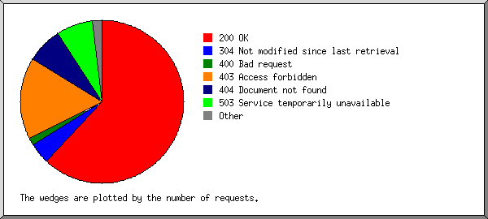
Listing status codes, sorted numerically.
| #reqs | status code |
|---|---|
| 2287 | 200 OK |
| 4 | 301 Document moved permanently |
| 154 | 304 Not modified since last retrieval |
| 51 | 400 Bad request |
| 30 | 401 Authentication required |
| 604 | 403 Access forbidden |
| 263 | 404 Document not found |
| 1 | 405 Method not allowed |
| 2 | 409 Request conflicts with state of resource |
| 30 | 500 Internal server error |
| 269 | 503 Service temporarily unavailable |
(Go To: Top | General Summary | Monthly Report | Daily Summary | Hourly Summary | Domain Report | Organization Report | Failed Referrer Report | Referring Site Report | Browser Report | Browser Summary | Operating System Report | Status Code Report | File Size Report | File Type Report | Directory Report | Request Report)
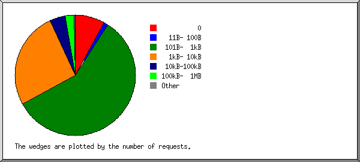
| size | #reqs | %bytes |
|---|---|---|
| 0 | 196 | |
| 1B- 10B | 0 | |
| 11B- 100B | 29 | |
| 101B- 1kB | 1407 | 1.48% |
| 1kB- 10kB | 642 | 3.57% |
| 10kB-100kB | 104 | 8.14% |
| 100kB- 1MB | 56 | 48.64% |
| 1MB- 10MB | 7 | 38.17% |
(Go To: Top | General Summary | Monthly Report | Daily Summary | Hourly Summary | Domain Report | Organization Report | Failed Referrer Report | Referring Site Report | Browser Report | Browser Summary | Operating System Report | Status Code Report | File Size Report | File Type Report | Directory Report | Request Report)
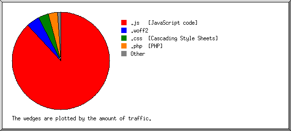
Listing extensions with at least 0.1% of the traffic, sorted by the amount of traffic.
| #reqs | %bytes | extension |
|---|---|---|
| 767 | 88.06% | .js [JavaScript code] |
| 21 | 4.37% | .woff2 |
| 47 | 3.46% | .css [Cascading Style Sheets] |
| 929 | 3.15% | .php [PHP] |
| 337 | 0.60% | [directories] |
| 340 | 0.36% | [not listed: 41 extensions] |
(Go To: Top | General Summary | Monthly Report | Daily Summary | Hourly Summary | Domain Report | Organization Report | Failed Referrer Report | Referring Site Report | Browser Report | Browser Summary | Operating System Report | Status Code Report | File Size Report | File Type Report | Directory Report | Request Report)
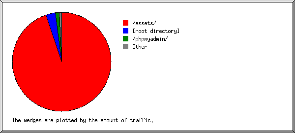
Listing directories with at least 0.01% of the traffic, sorted by the amount of traffic.
| #reqs | %bytes | directory |
|---|---|---|
| 768 | 94.83% | /assets/ |
| 1118 | 3.23% | [root directory] |
| 45 | 1.15% | /phpmyadmin/ |
| 227 | 0.36% | /api/ |
| 72 | 0.14% | /wp-content/ |
| 67 | 0.11% | /wp-includes/ |
| 53 | 0.07% | /wp-admin/ |
| 91 | 0.12% | [not listed: 48 directories] |
(Go To: Top | General Summary | Monthly Report | Daily Summary | Hourly Summary | Domain Report | Organization Report | Failed Referrer Report | Referring Site Report | Browser Report | Browser Summary | Operating System Report | Status Code Report | File Size Report | File Type Report | Directory Report | Request Report)
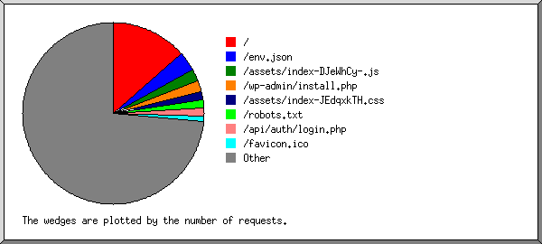
Listing files with at least 20 requests, sorted by the number of requests.
| #reqs | %bytes | last time | file |
|---|---|---|---|
| 332 | 0.54% | Jul/14/26 11:12 AM | / |
| 85 | 0.02% | Jul/14/26 10:42 AM | /env.json |
| 52 | 81.69% | Jul/14/26 10:42 AM | /assets/index-DJeWhCy-.js |
| 48 | 0.05% | Jul/14/26 10:50 AM | /wp-admin/install.php |
| 48 | 0.05% | Jul/14/26 10:50 AM | /wp-admin/install.php?step=1 |
| 37 | 3.29% | Jul/14/26 10:42 AM | /assets/index-JEdqxkTH.css |
| 36 | 0.05% | Jul/14/26 10:48 AM | /robots.txt |
| 32 | 0.03% | Jul/13/26 2:41 AM | /api/auth/login.php |
| 26 | Jul/13/26 10:53 PM | /favicon.ico | |
| 22 | 2.36% | Jul/14/26 10:42 AM | /assets/LandingPage-Dv8SefYP.js |
| 22 | 0.03% | Jul/14/26 10:42 AM | /sw.js |
| 21 | 0.02% | Jul/14/26 10:42 AM | /assets/file-text-DJrK52te.js |
| 21 | 0.02% | Jul/13/26 2:34 AM | /api/appointments/list.php |
| 21 | 0.01% | Jul/14/26 10:42 AM | /assets/rotate-ccw-DEYXgLqp.js |
| 21 | 0.01% | Jul/14/26 10:42 AM | /assets/search-BLymxia-.js |
| 21 | 0.03% | Jul/13/26 2:34 AM | /api/patients/list.php |
| 21 | 0.02% | Jul/14/26 10:42 AM | /assets/phone-Co67JhRS.js |
| 21 | 0.02% | Jul/14/26 10:42 AM | /assets/textarea-BQiWEu5n.js |
| 20 | 0.02% | Jul/14/26 10:42 AM | /assets/send-cdrsuHAc.js |
| 20 | 0.02% | Jul/14/26 10:42 AM | /assets/book-open-Bi6sJ5u3.js |
| 20 | 0.01% | Jul/14/26 10:42 AM | /assets/eye-DZPhoU57.js |
| 20 | 0.16% | Jul/14/26 10:42 AM | /assets/useDoctorContent-Cx8T-OwA.js |
| 20 | 0.02% | Jul/14/26 10:42 AM | /assets/table-CnbMZ7S8.js |
| 20 | 0.02% | Jul/14/26 10:42 AM | /assets/trash-2-B3l-ZhdV.js |
| 20 | 0.02% | Jul/14/26 10:42 AM | /assets/card-COhiAhz1.js |
| 20 | 0.02% | Jul/14/26 10:42 AM | /assets/pencil-BZAaPpo6.js |
| 20 | 0.02% | Jul/14/26 10:42 AM | /assets/building-2-CMX9_teL.js |
| 20 | 0.02% | Jul/14/26 10:42 AM | /assets/heart-CnN_F_j3.js |
| 20 | 0.01% | Jul/14/26 10:42 AM | /assets/plus-CHPIrJ6M.js |
| 20 | 0.01% | Jul/14/26 10:42 AM | /assets/upload-10Urw3kY.js |
| 20 | 0.01% | Jul/14/26 10:42 AM | /assets/download-qc_8yQ5r.js |
| 1342 | 11.44% | Jul/14/26 10:42 AM | [not listed: 549 files] |